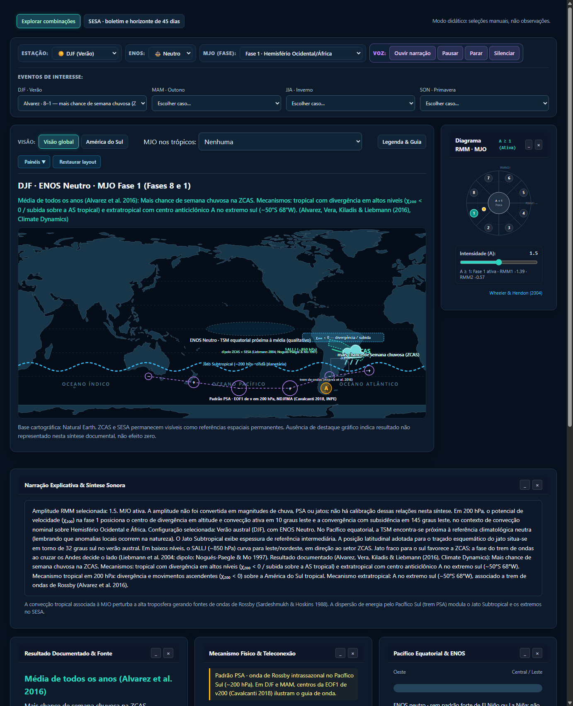
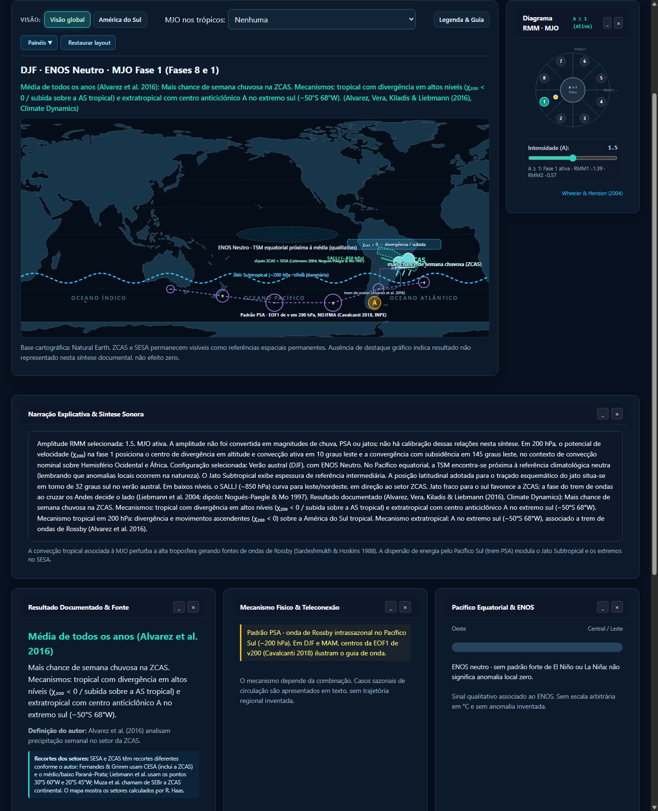
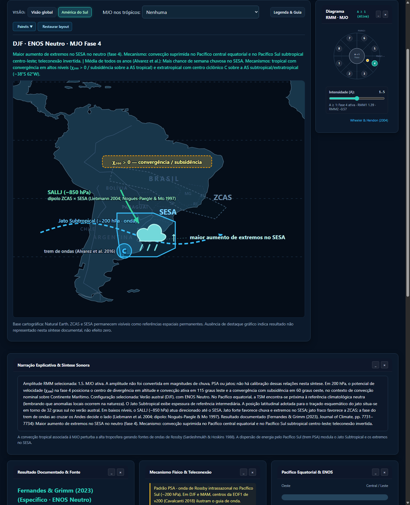
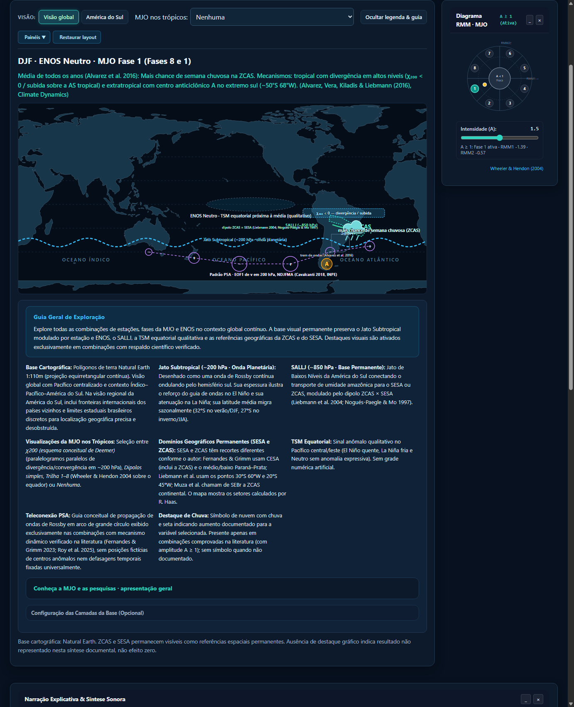

Capturas de Validação (v=20260927m)
1. Topo da Página Organizado (Controles e Mapa no Topo)

Espaço limpo sem cabeçalhos volumosos: botões de modo, painel de controles e mapa principal imediatamente visíveis.
2. Jato Subtropical em Onda Planetária (Global)

Jato Subtropical contínuo ondulando como onda de Rossby pelo hemisfério sul, rótulo central sobre o Pacífico e barra de ferramentas sem "Camadas (3/3)".
3. Jato Subtropical em Onda (Visão Regional da América do Sul)

Onda cruzando o Pacífico, Andes e SESA, com seta direcional indicando escoamento para o Atlântico Sul e destaque de extremos no SESA.
4. Legenda & Guia Aberta

Guia Geral de Exploração no topo da legenda, grade de especificações conceituais e seção "Conheça a MJO e as pesquisas" integrada.
2. DJF La Niña 8 · ZCAS (Fernandes & Grimm 2023)

SALLJ curvando para leste/nordeste em direção à ZCAS, fluxo de umidade da Amazônia para a ZCAS e divergência no SESA, convecção fonte subtropical desamontoada do Jato Subtropical, centro anticiclônico A (~50°S 68°W).
3. DJF El Niño 3 · SESA (Fernandes & Grimm 2023)

Pico de extremos no SESA. Par ciclone–anticiclone do El Niño em 200 hPa reforçando a fase 3 e Hadley anômala favorecendo chuva e extremos no SESA.
4. DJF Neutro 4 · SESA (Fernandes & Grimm 2023)

Maior aumento de extremos no neutro. Convecção suprimida no Pacífico Central e trem de ondas invertido estimulando extremos sobre o SESA.
5. χ200 Fase 1 · Paralelogramos Globais

Paralelogramos com bordas externas fixas em 30°N e 30°S (W=60°), médio (H=20°, W=40°) e núcleo (H=10°, W=22°, contorno puro). Divergência em 10°E e convergência em 145°E.
6. χ200 Fase 4 · Paralelogramos Globais

Divergência ativa em 115°E sobre o Continente Marítimo e convergência suprimida em 60°W sobre a América do Sul tropical, com inclinação para leste e limites estritos em ±30°.
7. χ200 Fase 8 · Paralelogramos Globais

Divergência em 65°W sobre a América do Sul e convergência em 135°E em formato de paralelogramos poligonais com zero elipses.
8. χ200 Fase 4 · Visão Regional

Visão regional da América do Sul na fase 4: paralelogramos de convergência suprimida (60°W) perfeitamente integrados com o dipolo SESA/ZCAS e SALLJ.